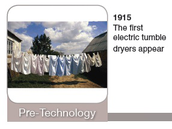
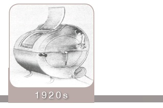

“Now some of you may remember back in the day when you had the job of hanging the wet wash on a line in the backyard, a tedious task to say the least. In the winter, of course, this chore was even more miserable. You had to hang the laundry in the house because it was too cold outside. So, you had to put up with soggy clothes hanging all over the house. These days, dryers like yours truly, do all the work for you.”
“In the beginning, around the 1920s, clothes dryers were turned with a hand crank and used the heat from a wood burning stove. This was, of course, until the invention of the motor driven dryer in the early 1930s. Motors really haven’t changed much over the years, except the newest dryer models now have a broken belt switch that turns the motor off when the belt breaks. In the past when the belt broke the motor would continue to run until the cycle was complete, running up your electric bill. Motors today are much smaller and more energy efficient. Dryer motors have double shafts. One end of the motor has a pulley that the belt rides on to turn the drum and on the other end the blower wheel rides on the shaft to move the air.”
“The dryer belt that I have is considerably longer than its counterpart, the washer belt. My buddy Frank Front Load is always trying to tell me that he has the bigger belt, but we know the truth! The dryer belt normally runs between 80 inches to 100 inches. This is because it has to go completely around the drum, the motor, and idler pulleys. Although the belt is what turns the drum, there are many other parts that help it turn smoothly. The drum is usually supported by either drum support rollers or a rear bearing; making sure the weight of the drum and laundry inside are tumbling easily without restricting the belt from moving the drum. Unlike the washer, the belt does not break because you have overloaded the dryer. Usually there are only two reasons for a dryer belt to break: the idler pulley (which is normally plastic and can tear the belt), or the drum rollers, or rear support bearing (which can wear down from the heat causing the drum to struggle to turn). Many manufacturers suggest a maintenance kit which includes all the parts we just mentioned to not only supply the new belt but, by changing the other parts you remove the reason the belt broke in the first place.”
“Now, on to my favorite part...the heat! Heating elements can be located in many different places on today’s dryers. Some are to the left rear under the drum, some are to the right rear under the drum. Some are located in the rear of the drum. Older models even placed the heating element in a halo design around the front of the drum. Most heating elements are encased in some sort of can where the air is directed over the element and then into the drum to dry your clothes. A lot of manufacturers offer the replacement in either a complete assembly or as a restring, giving the customer an option to make the repair. When the heat source is gas, they usually place the gas burner assembly under the drum to the left or right sides. On diagrams for gas dryers you will usually find all components of the gas burner on one diagram instead of spread out over several diagrams. Can you imagine using the first dryer; having to sit next to a “hot stove” turning a large drum by hand to dry the clothes?”
“The blower wheel looks somewhat like a “hamster wheel” and blows the air across the heating element into the drum to dry your clothes. On some dryers the air moves left to right and on some the air moves back to front. The placement of the lint filter depends on the movement of the air flow.”